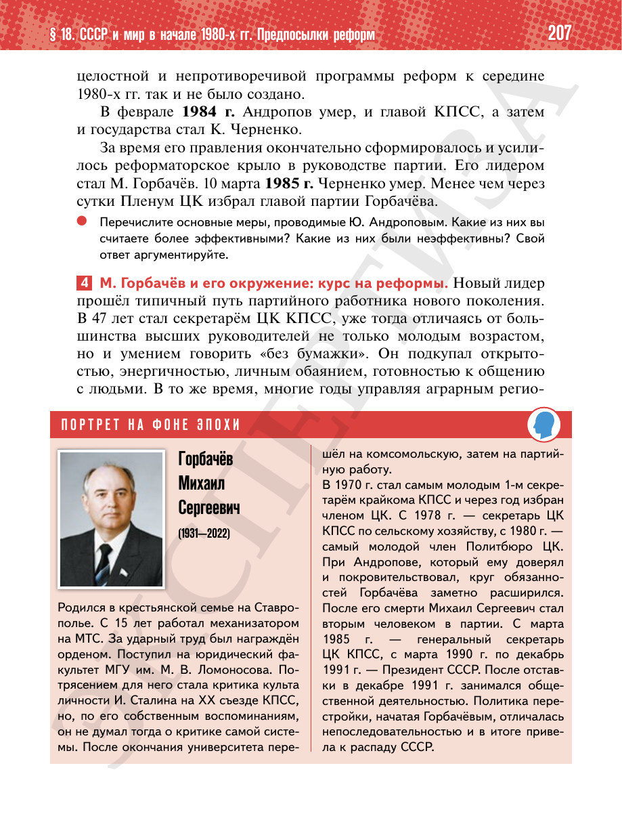

⌂
Мединский.нет
Последнее обновление: 30.08.2026
Мединский.нет
›
История России. 11 класс. Базовый уровень
›
Глава I. СССР в 1945—1991 гг.
›
§ 18. СССР и мир в начале 1980-х гг. Предпосылки реформ
›
стр. 207

← стр. 206
Оглавление
стр. 208 →
×